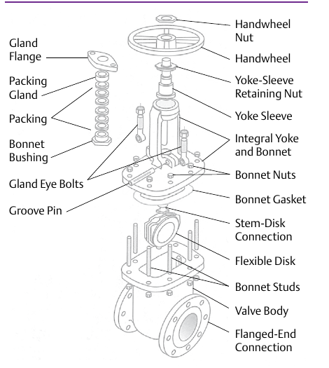
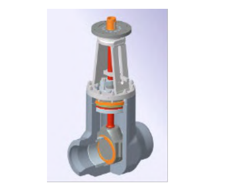

Bolted Bonnet vs. Pressure-Seal Bonnet
Bolted Bonnet

Bolts and nuts compress a gasket at the body-bonnet joint — the baseline construction, used across ANSI classes 150 through 1500.
Pressure-Seal Bonnet

Used only on high-pressure classes 900 through 4500. Rising internal pressure itself increasingly loads the seal, rather than the joint relying solely on preset bolt torque.
After Control Valve Handbook, 6th ed., Figs. 10.1 & 10.2 — content in this chapter is credited to IPT's Pipe Trades Handbook (Robert A. Lee), reprinted at CVH Ch. 10; used directly, Fig. 10.2's own printed labels retained (Style Guide Sec 6.3). Component Index: cvh-cmp-gate-valve-bolted-bonnet, cvh-cmp-gate-valve-pressure-seal.